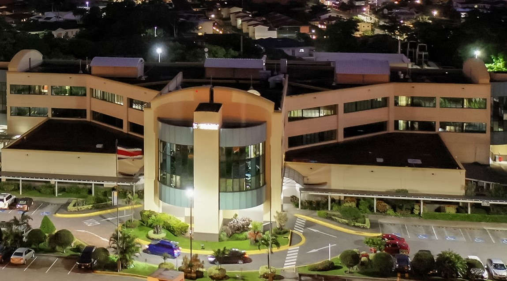

Uma história que inspira!
A Clínica Sua Saúde de Erechim nasceu da solidariedade, vontade e união de esforços da comunidade erechinense. Os trabalhos voltados à sua construção tiveram início em 1997, quando nossos queridos e amados doutores se uniram e se mobilizaram para viabilizar o projeto. Desde a sua inauguração, a trajetória da Clínica Sua Saúde Erechim foi marcada por crescimento e melhorias, englobando a estrutura física, os serviços disponibilizados, a qualificação dos profissionais e a atualização tecnológica, de forma a atender as necessidades sempre crescentes da população regional.